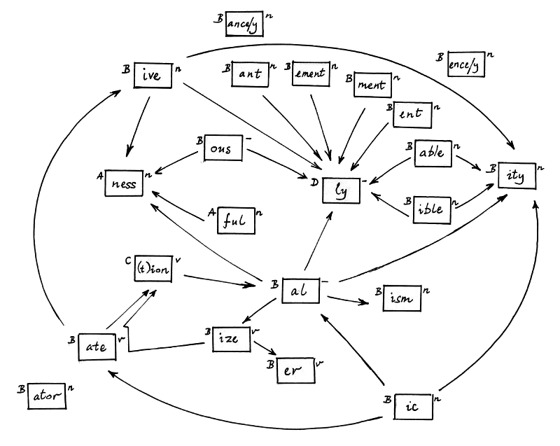

This is a revised version of Martin Porter’s paper which was published as part of the Karen Sparck Jones Festschrift of 2005.
Charting a New Course: Progress in Natural Language Processing and Information Retrieval: A Festschrift for Professor Karen Sparck Jones, edited by John Tait, Amsterdam: Kluwer, 2005.
Martin Porter, December 2001 (revised November 2008).
This is a festschrift paper, so I am allowed to begin on a personal note. In 1979 I was working with Keith van Rijsbergen and Stephen Robertson on a British Library funded IR project to investigate the selection of good index terms, and one of the things we found ourselves having to do was to establish a document test collection from some raw data that had been sent to us on a magnetic tape by Peter Vaswani of the National Physical Laboratory. I was the tame programmer in the project, so it was my job to set up the test collection.
On the whole it did not prove too difficult. The data we received was a collection of about 11,000 documents (titles and short abstracts), 93 queries — in a free text form, and relevance judgements. All the text was in upper case without punctuation, and there were one or two marker characters to act as field terminators. By modern standards the data was really very small indeed, but at the time it was considerably larger than any of the other test collections we had. What you had to do was to cast it into a standard form for experimental work. You represented terms and documents by numbers, and created flat files in text form corresponding to the queries, relevance assessments, and term to document index. One process however was less straightforward. On their way to becoming numeric terms, the words of the source text were put through a process of linguistic normalisation called suffix stripping, in which certain derivational and inflectional suffixes attached to the words were removed. There was a standard piece of software used in Cambridge at that time to do this, written in 1971 by Keith Andrews (Andrews, 1971) as part of a Diploma Project. One of the courses in Cambridge is the one year post-graduate Diploma in Computer Science. Each student on the course is required to do a special project, which includes writing a significant piece of software — significant in the sense of being both useful and substantial. Keith's piece of software was more useful than most, and it continued to be used as a suffix stripping program, or stemmer, for many years after it was written.
Now by an odd chance I was privy to much of Keith Andrews’ original thinking at the time that he was doing the work. The reason for this was that in 1971 I was looking for a house in Cambridge, and the base I was operating from was a sleeping bag on the living room floor of an old friend called John Dawson, who was Keith’s diploma supervisor. Keith used to come round and discuss stemming algorithms with him, while I formed a mute audience. I learnt about the Lovins stemming algorithm of 1968 (Lovins, 1968), and must I think have at least looked at her paper then, since I know it was not new to me when I saw it again in 1979. Their view of Lovins’ work was that it did not go far enough. There needed to be many more suffixes, and more complex rules to determine the criteria for their removal. Much of their discussion was about new suffixes to add to the list, and removal rules. It was interesting therefore to find myself needing to use Andrews’ work eight years later, and questioning some of its assumptions. Did you need that many suffixes? Did the rules need to be so complicated? Perhaps one would do better to break composite suffixes into smaller units and remove them piecemeal. And perhaps syllables would be a better count of stem length than letters. So I wrote my own stemmer, which became known as the Porter stemmer, and which was published in 1980 (Porter, 1980).
I must explain where Karen Sparck Jones fits into all of this. Keith Andrews’ piece of work was originally suggested by Karen as a Diploma student project, and she was able to use the Andrews stemmer in her IR experiments throughout the seventies. In 1979 however Karen had moved much more into the field of Natural Language Processing and Artificial Intelligence, and by then had two or three research students in that field just writing up their PhDs (only one of whom I really got to know — John Tait, the editor of this volume). So we were in contact, but not working together. That again was an odd chance: that Karen had been my research supervisor in a topic other than IR, and that when later I was doing IR research at Cambridge I was not working with Karen. While I was engaged on writing the stemmer, Karen showed some justifiable irritation that I had become interested in a topic so very remote from the one for which we had received the British Library funding. Nevertheless, she came into my room one day, said, ‘Look, if you're getting interested in stemming, you’d better read this,’ and handed me the 1968 issue of Mechanical Translation that contains the Lovins paper. I still have this issue with Karen’s name across the top. (And I hope she didn't expect it back!)
Another 20 years have gone by, and I have been studying the Lovins stemmer again, really because I was looking for examples to code up in Snowball, a small string processing language I devised in the latter half of 2001 particularly adapted for writing stemming algorithms. Lovins’ stemmer strikes me now as a fine piece of work, for which she never quite received the credit she deserved. It was the first stemmer for English set out as an algorithm that described the stemming process exactly. She explained how it was intended to be used to improve IR performance, in just the way in which stemmers are used today. It is not seriously short of suffixes: the outstanding omissions are the plural forms ements and ents corresponding to her ement and ent, and it is easy enough to add them into the definition. It performs well in practice. In fact it is still in use, and can be downloaded in various languages from the net (1). The tendency since 1980 has been to attach the name ‘Porter’ to any language stemming process that does not use a dictionary, even when it is quite dissimilar to the original Porter stemmer (witness the Dutch Porter stemmer of Kraaij and Pohlmann (2) (Kraaij, 1994 and Kraaij, 1995), but the priority really belongs to Lovins. It also has one clear advantage over the Porter algorithm, in that it involves fewer steps. Coded up well, it should run a lot faster.
A number of things intrigued me. Why are the Lovins and Porter stemmers so different, when what they do looks so similar? Could the stemmer, in some sense, be brought up-to-date? Could the Porter stemmer be cast into the Lovins form, and so run faster?
This paper is about the answers for these questions. In discovering them, I have learned a lot more about my own stemmer.
It may be worth saying a little on what stemming is all about. We can imagine a document with the title,
and a query, containing the words
We want to match query against title so that ‘Pre-raphaelitism’ matches ‘PRE-RAPHAELITE’ and ‘Critical’ matches ‘CRITICISM’. This leads to the idea of removing endings from words as part of the process of extracting index terms from documents, a similar process of ending removal being applied to queries prior to the match. For example, we would like to remove the endings from
so that each word is reduced to ‘critic’. This is the stem, from which the other words are formed, so the process as a whole is called stemming. It is a feature of English morphology that the part of the word we want to remove is at the end — the suffix. But the same is broadly true of French, German and other languages of the Indo-European group. It is also true of numerous languages outside Indo-European, Finnish for example, although there is a boundary beyond which it is not true. So Chinese, where words are simple units without affixes, and Arabic, where the stem is modified by prefixes and infixes as well as suffixes, lie outside the boundary. As an IR technique it therefore has wide applicability. In developing stemmers two points were recognised quite early on. One is that the morphological regularities that you find in English (or other languages) mean that you can attempt to do stemming by a purely algorithmic process. Endings al, ally, ism etc. occur throughout English vocabulary, and are easy to detect and remove: you don’t need access to an on-line dictionary. The other is that the morphological irregularities of English set a limit to the success of an algorithmic approach. Syntactically, what look like endings may not be endings (offspring is not offspr + ing), and the list of endings seems to extend indefinitely (trapez-oid, likeli-hood, guardian-ship, Tibet-an, juven-ilia, Roman-esque, ox-en ...) It is difficult to gauge where to set the cut-off for these rarer forms. Semantically, the addition of a suffix may alter the meaning of a word a little, a lot, or completely, and morphology alone cannot measure the degree of change (prove and provable have closely related meanings; probe and probable do not.) This meant that stemming, if employed at all, became the most challenging, and the most difficult part of the indexing process.
In the seventies, stemming might be applied as part of the process of establishing a test collection, and when it was there would not usually be any attempt to make the stemming process well-defined, or easily repeatable by another researcher. This was really because the basis for experiment replication was the normalised data that came out of the stemming process, rather than the source data plus a description of stemming procedures. Stemming tended to be applied, and then forgotten about. But by the 1980s, stemming itself was being investigated. Lennon and others (Lennon, 1981) found no substantial differences between the use of different stemmers for English. Harman (Harman, 1991) challenged the effectiveness of stemming altogether, when she reported no substantial differences between using and not using stemming in a series of experiments. But later work has been more positive. Krovetz (Krovetz, 1995), for example, reported small but significant improvements with stemming over a range of test collections.
Of course, all these experiments assume some IR model which will use stemming in a particular way, and will measure just those features that tests collections are, notoriously, able to measure. We might imagine an IR system where the users have been educated in the advantages and disadvantages to be expected from stemming, and are able to flag individual search terms to say whether or not they are to be used stemmed or unstemmed. Stemming sometimes improves, occasionally degrades, search performance, and this would be the best way of using it as an IR facility. Again stemming helps regularise the IR vocabulary, which is very useful when preparing a list of terms to present to a user as candidates for query expansion. But this advantage too is difficult to quantify.
An evaluative comparison between the Lovins and later stemmers lies in any case outside the scope of this paper, but it is important to bear in mind that it is not a straightforward undertaking.
Structurally, the Lovins stemmer is in four parts, collected together in four Appendices A, B, C and D in her paper. Part A is a list of 294 endings, each with a letter which identifies a condition for whether or not the ending should be removed. (I will follow Lovins in using ‘ending’ rather than ‘suffix’ as a name for the items on the list.) Part A therefore looks like this:
Endings are banked by length, from 11 letters down to 1. Each bank is tried in turn until an ending is found which matches the end of the word to be stemmed and leaves a stem which satisfies the given condition, when the ending is removed. For example condition C says that the stem must have at least 4 letters, so bimetallically would lose allically leaving a stem bimet of length 5, but metallically would not reduce to met, since its length is only 3.
There are 29 such conditions, called A to Z, AA, BB and CC, and they constitute part B of the stemmer. Here they are (* stands for any letter):
| A | No restrictions on stem | |
| B | Minimum stem length = 3 | |
| C | Minimum stem length = 4 | |
| D | Minimum stem length = 5 | |
| E | Do not remove ending after e | |
| F | Minimum stem length = 3 and do not remove ending after e | |
| G | Minimum stem length = 3 and remove ending only after f | |
| H | Remove ending only after t or ll | |
| I | Do not remove ending after o or e | |
| J | Do not remove ending after a or e | |
| K | Minimum stem length = 3 and remove ending only after l, i or u*e | |
| L | Do not remove ending after u, x or s, unless s follows o | |
| M | Do not remove ending after a, c, e or m | |
| N | Minimum stem length = 4 after s**, elsewhere = 3 | |
| O | Remove ending only after l or i | |
| P | Do not remove ending after c | |
| Q | Minimum stem length = 3 and do not remove ending after l or n | |
| R | Remove ending only after n or r | |
| S | Remove ending only after dr or t, unless t follows t | |
| T | Remove ending only after s or t, unless t follows o | |
| U | Remove ending only after l, m, n or r | |
| V | Remove ending only after c | |
| W | Do not remove ending after s or u | |
| X | Remove ending only after l, i or u*e | |
| Y | Remove ending only after in | |
| Z | Do not remove ending after f | |
| AA | Remove ending only after d, f, ph, th, l, er, or, es or t | |
| BB | Minimum stem length = 3 and do not remove ending after met or ryst | |
| CC | Remove ending only after l |
There is an implicit assumption in each condition, A included, that the minimum stem length is 2.
This is much less complicated than it seems at first. Conditions A to D depend on a simple measure of minimum stem length, and E and F are slight variants of A and B. Out of the 294 endings, 259 use one of these 6 conditions. The remaining 35 endings use the other 23 conditions, so conditions G, H ... CC have less than 2 suffixes each, on average. What is happening here is that Lovins is trying to capture a rule which gives a good removal criterion for one ending, or a small number of similar endings. She does not explain the thinking behind the conditions, but it is often not too difficult to reconstruct. Here for example are the last few conditions with their endings,
Part C of the Lovins stemmer is a set of 35 transformation rules used to adjust the letters at the end of the stem. These rules are invoked after the stemming step proper, irrespective of whether an ending was actually removed. Here are about half of them, with examples to show the type of transformation intended (letters in square brackets indicate the full form of the words),
| 1) | bb | → | b | rubb[ing] → rub | ||||
| ll | → | l | controll[ed] → control | |||||
| mm | → | m | trimm[ed] → trim | |||||
| rr | → | r | abhorr[ing] → abhor | |||||
| 2) | iev | → | ief | believ[e] → belief | ||||
| 3) | uct | → | uc | induct[ion] → induc[e] | ||||
| 4) | umpt | → | um | consumpt[ion] → consum[e] | ||||
| 5) | rpt | → | rb | absorpt[ion] → absorb | ||||
| 6) | urs | → | ur | recurs[ive] → recur | ||||
| 7a) | metr | → | meter | parametr[ic] → paramet[er] | ||||
| 8) | olv | → | olut | dissolv[ed] → dissolut[ion] | ||||
| 11) | dex | → | dic | index → indic[es] | ||||
| 16) | ix | → | ic | matrix → matric[es] | ||||
| 18) | uad | → | uas | persuad[e] → persuas[ion] | ||||
| 19) | vad | → | vas | evad[e] → evas[ion] | ||||
| 20) | cid | → | cis | decid[e] → decis[ion] | ||||
| 21) | lid | → | lis | elid[e] → elis[ion] | ||||
| 31) | ert | → | ers | convert[ed] → convers[ion] | ||||
| 33) | yt | → | ys | analytic → analysis | ||||
| 34) | yz | → | ys | analyzed → analysed |
Finally, part D suggests certain relaxed matching rules between query terms and index terms when the stemmer has been used to set up an IR system, but we can regard that as not being part of the stemmer proper.
Snowball is a string processing language designed with the idea of making the definition of stemming algorithms much more rigorous. The Snowball compiler translates a Snowball script into a thread-safe ANSI C module, where speed of execution is a major design consideration. The resulting stemmers are pleasantly fast, and will process one million or so words a second on a high-performance modern PC. The Snowball website (3) gives a full description of the language, and also presents stemmers for a range of natural languages. Each stemmer is written out as a formal algorithm, with the corresponding Snowball script following. The algorithm definition acts as program comment for the Snowball script, and the Snowball script gives a precise definition to the algorithm. The ANSI C code with the same functionality can also be inspected, and sample vocabularies in source and stemmed form can be used for test purposes. An essential function of the Snowball script is therefore comprehensibility — it should be fully understood by the reader of the script, and Snowball has been designed with this in mind. It contrasts interestingly in this respect with a system like Perl. Perl has a very big definition. Writing your own scripts in Perl is easy, after the initial learning hurdle, but understanding other scripts can be quite hard. The size of the language means that there are many different ways of doing the same thing, which gives programmers the opportunity of developing highly idiosyncratic styles. Snowball has a small, tight definition. Writing Snowball is much less easy than writing Perl, but on the other hand once it is written it is fairly easy to understand (or at least one hopes that it is). This is illustrated by the Lovins stemmer in Snowball, which is given in Appendix 1. There is a very easy and natural correspondence between the different parts of the stemmer definition in Lovins' original paper and their Snowball equivalents. For example, the Lovins conditions A, B ... CC code up very neatly into routines with the same name. Taking condition L,
corresponds to
define L as ( test hop 2 not 'u' not 'x' not ('s' not 'o') )
When L is called, we are the right end of the stem, moving left towards the
front of the word. Each Lovins condition has an implicit test for a stem of
length 2, and this is done by test hop 2
, which sees if it is possible to
hop two places left. If it is not, the routine immediately returns with a
false signal, otherwise it carries on. It tests that the character at the
right hand end is not u, and also not x, and also not s following a letter
which is not o. This is equivalent to the Lovins condition. Here is not of
course the place to give the exact semantics, but the you can quickly get
the feel of the language by comparing the 29 Lovins conditions with their
Snowball definitions.
Something must be said about the among
feature of Snowball however,
since this is central to the efficient implementation of stemmers. It is
also the one part of Snowball that requires just a little effort to
understand.
At its simplest, among
can be used to test for alternative strings. The
among
s used in the definition of condition AA and the undouble
routine have this form. In Snowball you can write
'sh' or 's' or 't' 'o' or 'i' 'p'
which will match the various forms shop, ship, sop, sip, top, tip. The
order is important, because if 'sh'
and 's'
are swapped over, the
's'
would match the first letter of ship, while 'o'
or 'i'
would fail to match with the following 'h'
— in other words the pattern
matching has no backtracking. But it can also be written as
among('sh' 's' 't') among('i' 'o') 'p'
The order of the strings in each among
is not important, because the
match will be with the longest of all the strings that can match. In
Snowball the implementation of among
is based on the binary-chop idea,
but has been carefully optimised. For example, in the Lovins stemmer, the
main among
in the endings routine has 294 different strings of average
length 5.2 characters. A search for an ending involves accessing a number
of characters within these 294 strings. The order is going to be
Klog2294, or 8.2K, where K is a number that one hopes will
be small, although one must certainly expect it to be greater than 1. It
turns out that, for the successive words of a standard test vocabulary,
K averages to 1.6, so for each word there are about 13 character
comparisons needed to determine whether it has one of the Lovins endings.
Each string in an among
construction can be followed by a routine name. The
routine returns a true/false signal, and then the among
searches for the
longest substring whose associated routine gives a true signal. A string not
followed by a routine name can be thought of as a string which is associated
with a routine that does nothing except give a true signal. This is the way
that the among
in the endings routine works, where indeed every string is
followed by a routine name.
More generally, lists of strings in the among
construction can be followed
by bracketed commands, which are obeyed if one of the strings in the list is
picked out for the longest match. The syntax is then
among( S11 S12 ... (C1)
S21 S22 ... (C2)
...
Sn1 Sn2 ... (Cn)
)
where the Sij are strings, optionally followed by their routine names,
and the Ci are Snowball command sequences. The semantics is a bit
like a switch in C, where the switch is on a string rather than a numerical
value:
switch(...) {
case S11: case S12: ... C1; break;
case S21: case S22: ... C2; break;
...
case Sn1: case Sn2: ... Cn; break;
}
The among
in the respell routine has this form.
The full form however is to use among
with a preceding substring
, with
substring
and among
possibly separated by further commands.
substring
triggers the test for the longest matching substring, and the among
then
causes the corresponding bracketed command to be obeyed. At a simple
level this can be used to cut down the size of the code, in that
substring C among( S11 S12 ... (C1)
S21 S22 ... (C2)
...
Sn1 Sn2 ... (Cn)
)
is a shorter form of
among( S11 S12 ... (C C1)
S21 S22 ... (C C2)
...
Sn1 Sn2 ... (C Cn)
)
More importantly, substring
and among
can work in different contexts. For
example, substring
could be used to test for the longest string, matching from
right to left, while the commands in the among
could operate in a left to
right direction. In the Lovins stemmer, substring
is used in this style:
[substring] among ( ... )
The two square brackets are in fact individual commands, so before the among
come three commands. [
sets a lower marker, substring
is obeyed, searching
for the strings in the following among, and then ]
sets an upper marker.
The region between the lower and upper markers is called the slice, and this
may subsequently be copied, replaced or deleted.
It was possible to get the Lovins stemmer working in Snowball very quickly. The Sourceforge versions (1) could be used to get the long list of endings and to help with the debugging. There was however one problem, that rules 24 and 30 of part C conflicted. They are given as
This had not been noticed in the Sourceforge implementations, but immediately gave rise to a compilation error in Snowball. Experience suggested that I was very unlikely to get this problem resolved. Only a few months before, I had hit a point in a stemming algorithm where something did not quite make sense. The algorithm had been published just a few years ago, and contacting one at least of the authors was quite easy. But I never sorted it out. The author I traced was not au fait with the linguistic background, and the language expert had been swallowed up in the wilds of America. So what chance would I have here? Even if I was able to contact Lovins, it seemed to me inconceivable that she would have any memory of, or even interest in, a tiny problem in a paper which she published 33 years ago. But the spirit of academic enquiry forced me to venture the attempt. After pursuing a number of red-herrings, email contact was finally made.
Her reply was a most pleasant surprise.
... The explanation is both mundane and exciting. You have just found a typo in the MT article, which I was unaware of all these years, and I suspect has puzzled a lot of other people too. The original paper, an MIT-published memorandum from June 1968, has rule 30 as
ent → ens except following m
and that is undoubtedly what it should be ...
It is very important in understanding the Lovins stemmer to know something of the IR background of the late sixties. In the first place there was an assumption that IR was all, or mainly, about the retrieval of technical scientific papers, and research projects were set up accordingly. I remember being shown, in about 1968, a graph illustrating the ‘information explosion’, as it was understood at the time, which showed just the rate of growth of publications of scientific papers in various different domains over the previous 10 or 20 years. Computing resources were very precious, and they could not be wasted by setting up IR systems for information that was, by comparison, merely frivolous (articles in popular magazines, say). And even in 1980, when I was working in IR, the data I was using came from the familiar, and narrow, scientific domain. Lovins was working with Project Intrex (Overhage, 1966), where the data came from papers in materials science and engineering.
Secondly, the idea of indexing on every word in a document, or even looking at every word before deciding whether or not to put it into an index, would have seemed quite impractical, even though it might have been recognised as theoretically best. In the first place, the computing resources necessary to store and analyse complete documents in machine readable form were absent, and in the second, the rigidities of the printing industry almost guaranteed that one would never get access to them. A stemmer, therefore, would be seen as something not applied to general text but to certain special words, and in the case of the Lovins stemmer, the plan was to apply it to the subject terms that were used to categorize each document. Subsequently it would be used with each word in a query, where it was hoped that the vocabulary of the queries would match the vocabulary of the catalogue of subject terms.
This accounts for: —
If we take a fairly ordinary vocabulary of modern English, derived from non-scientific writing, it is interesting to see how much of the Lovins stemmer does not actually get used. We use vocabulary V, derived from a sample of modern texts from Project Gutenberg (4). V can be inspected at (5). It contains 29,401 words, and begins
This helps explain why the Porter and Lovins stemmers behave in a fairly similar way despite the fact that they look completely different — it is because most of the work is being done in just a small part of the stemmer, and in that part there is a lot of overlap. Porter and Lovins stem 64% of the words in V identically, which is quite high. (By contrast, an erroneous but plausibly written Perl script advertised on the Web as an implementation of the Porter stemmer still proves to stem only 86% of the words in V to the same forms that are produced by the Porter stemmer.)
A feature of the Lovins stemmer that is worth looking at in some detail is the transformation rules. People who come to the problem of stemming for the first time usually devote a lot of mental energy to the issue of morphological irregularity which they are trying to address.
A good starting point is the verbs of English. Although grammatically complex, the morphological forms of the English verb are few, and are illustrated by the pattern harm, harms, harming, harmed, where the basic verb form adds s, ing and ed to make the other three forms. There are certain special rules: to add s to a verb ending ss an e is inserted, so pass becomes passes, and adding e and ing replaces a final e of the verb (love to loves), and can cause consonant doubling (hop to hopped), but apart from this all verbs in the language follow the basic pattern with the exception of a finite class of irregular verbs. In a regular verb, the addition of ed to the basic verb creates both the past form (‘I harmed’) and the p.p. (past participle) form (‘I have harmed’). An irregular verb, such as ring, forms its past in some other way (‘I rang’), and may have a distinct p.p. (‘I have rung’). The irregular verbs have a different past form, and sometimes a separate p.p. form. It is easy to think up more examples,
| stem | past | p.p. | ||
| ring | rang | rung | ||
| rise | rose | risen | ||
| sleep | slept | slept | ||
| fight | fought | fought | ||
| come | came | come | ||
| go | went | gone | ||
| hit | hit | hit |
To compose a realistic list for English verb respelling we therefore need to judge word rarity. But among the commoner verb forms even greater problems arise because of their use as homonyms. A rose is a type of flower, so is it wise to conflate rose and rise? Is it wise to conflate saw and see when saw can mean a cutting instrument?
We suddenly get to the edge of what it is useful to include in a stemming algorithm. So long as a stemming algorithm is built around general rules, the full impact of the stemmer on a vocabulary need not be studied too closely. It is sufficient to know that the stemmer, judiciously used, improves retrieval performance. But when we look at its effect on individual words these issues can no longer be ignored. To build even a short list of words into a stemmer for special treatment takes us into the area of the dictionary-based stemmer, and the problem of determining, for a pair of related words in the dictionary, a measure of semantic similarity which tells us whether or not the words should be conflated together.
About half the transformation rules in the Lovins stemmer deal with a problem which is similar to that posed by the irregular verbs of English, and which ultimately goes back to the irregular forms of second conjugation verbs in Latin. We can call it Latin verb respelling. Verbs like induce, consume, commit are perfectly regular in modern English, but the adjectival and noun forms induction, consumptive, commission that derive from them correspond to p.p. forms in Latin. You can see the descendants of these Latin irregularities in modern Italian, which has commettere with p.p. commesso, like our commit and commission, and scendere with p.p. sceso like our ascend and ascension (although scendere means ‘to go down’ rather than ‘to go up’).
Latin verb respelling often seems to be more the territory of a stemmer than English verb respelling, presumably because Latin verb irregularities correspond to consonantal changes at the end of the stem, where the stemmer naturally operates, while English verb irregularities more often correspond to vowel changes in the middle. Lovins was no doubt particularly interested in Latin verb respelling because so many of the words affected have scientific usages.
We can judge that Latin verb respellings constitute a small set because the number of second conjugation verbs of Latin form a small, fixed set. Again, looking at Italian, a modern list of irregular verbs contains 150 basic forms (nearly all of them second conjugation), not unlike the number of forms in English. Extra verbs are formed with prefixes. Corresponding English words that exhibit the Latin verb respelling problem will be a subset of this system. In fact we can offer a Snowball script that does the Latin verb respelling with more care. It should be invoked, in the Porter stemmer, after removal of ive or ion endings only,
define prefix as (
among (
'a' 'ab' 'ad' 'al' 'ap' 'col' 'com' 'con' 'cor' 'de'
'di' 'dis' 'e' 'ex' 'in' 'inter' 'o' 'ob' 'oc' 'of'
'per' 'pre' 'pro' 're' 'se' 'sub' 'suc' 'trans'
) atlimit
)
define second_conjugation_form as (
[substring] prefix among (
'cept' (<-'ceiv') //-e con de re
'cess' (<-'ced') //-e con ex inter pre re se suc
'cis' (<-'cid') //-e de (20)
'clus' (<-'clud') //-e con ex in oc (26)
'curs' (<-'cur') // re (6)
'dempt' (<-'deem') // re
'duct' (<-'duc') //-e de in re pro (3)
'fens' (<-'fend') // de of
'hes' (<-'her') //-e ad (28)
'lis' (<-'lid') //-e e col (21)
'lus' (<-'lud') //-e al de e
'miss' (<-'mit') // ad com o per re sub trans (29)
'pans' (<-'pand') // ex (23)
'plos' (<-'plod') //-e ex
'prehens' (<-'prehend') // ap com
'ris' (<-'rid') //-e de (22)
'ros' (<-'rod') //-e cor e
'scens' (<-'scend') // a
'script' (<-'scrib') //-e de in pro
'solut' (<-'solv') //-e dis re (8)
'sorpt' (<-'sorb') // ab (5)
'spons' (<-'spond') // re (25)
'sumpt' (<-'sum') // con pre re (4)
'suas' (<-'suad') //-e dis per (18)
'tens' (<-'tend') // ex in pre (24)
'trus' (<-'trud') //-e ob (27)
'vas' (<-'vad') //-e e (19)
'vers' (<-'vert') // con in re (31)
'vis' (<-'vid') //-e di pro
)
)
prefix
, and there is nothing more before the prefix string (which is
what the
atlimit
command tests), it is replaced by suad. So dissuas(ion) goes to
dissuad(e)
and persuas(ive) to persuad(e). Of course, asuas(ion), absuas(ion),
adsuas(ion) and so on would get the same treatment, but not being words of
English that does not really matter. The corresponding Lovins rules are
shown in brackets.
This is not quite the end
of the story, however, because the Latin forms ex + cedere (‘go
beyond’) pro + cedere (‘go forth’), and sub + cedere
(‘go after’) give rise to verbs which,
by an oddity of English orthography, have an extra letter e: exceed, proceed,
succeed. They can be sorted out in a final respelling step:
define final_respell as (
[substring] atlimit among(
'exced' (<-'exceed')
'proced' (<-'proceed')
'succed' (<-'succeed')
/* extra forms here perhaps */
)
)
As you might expect, close inspection of this process creates doubts in the same way as for English verb respelling. (Should we really conflate commission and commit? etc.)
The other transformation rules are concerned with unusual plurals, mainly of Latin or Greek origin, er and re differences, as in parameter and parametric, and the sis/tic connection of certain words of Greek origin: analysis/analytic, paralysis/paralytic ... (rule 33), and hypothesis/hypothetic, kinesis/kinetic ... (rule 32). Again, these irregularities might be tackled by forming explicit word lists. Certainly rule 30, given as,
goes somewhat wild when given a general English vocabulary (dent becomes dens for example), although it is the only rule that might be said to have a damaging effect.
The 1980 paper (Porter, 1980) may be said to define the ‘pure’ Porter stemmer. The stemmer distributed at (7) can be called the ‘real’ Porter stemmer, and differs from the pure stemmer in three small respects, which are carefully explained. This disparity does not require much excuse, since the oldest traceable encodings of the stemmer have always contained these differences. There is also a revised stemmer for English, called ‘Porter2’ and still subject to slight changes. Unless otherwise stated, it is the real Porter stemmer which is being studied below.
The Porter stemmer differs from the Lovins stemmer in a number of respects. In the first place, it only takes account of fairly common features of English. So rare suffixes are not included, and there is no equivalent of Lovins’ transformation rules, other than her rule (1), the undoubling of terminal double letters. Secondly, it removes suffixes only when the residual stem is fairly substantial. Some suffixes are removed only when at least one syllable is left, and most are removed only when at least two syllables are left. (One might say that this is based on a guess about the way in which the meanings of a stem is related to its length in syllables (8).) The Porter stemmer is therefore ‘conservative’ in its removal of suffixes, or at least that is how it has often been described. Thirdly, it removes suffixes in a series of steps, often reducing a compound suffix to its first part, so a step might reduce ibility to ible, where ibility is thought of as being ible + ity. Although the description of the whole stemmer is a bit complicated, the total number of suffixes is quite small — about 60.
The Porter stemmer has five basic steps. Step 1 removes an inflectional suffix. There are only three of these: ed and ing, which are verbal, and s, which is verbal (he sings), plural (the songs) or possessive (the horses’ hooves), although the rule for s removal is the same in all three cases. Step 1 may also restore an e (hoping → hope), undouble a double letter pair (hopping → hop), or change y to i (poppy → poppi, to match with poppies → poppi.) Steps 2 to 4 remove derivational suffixes. So ibility may reduce to ible in step 2, and ible itself may be removed in step 4. Step 5 is for removing final e, and undoubling ll.
A clear advantage of the Lovins stemmer over the Porter stemmer is speed. The Porter stemmer has five steps of suffix removal to the Lovins stemmer’s one. It is instructive therefore to try and cast the Porter stemmer into the shape of the Lovins stemmer, if only for the promise of certain speed advantages. As we will see, we learn a few other things from the exercise as well.
First we need a list of endings. The Lovins endings were built up by hand, but we can construct a set of endings for the Porter stemmer by writing an ending generator that follows the algorithm definition. From an analysis of the suffixes in steps 2 to 4 of the Porter stemmer we can construct the following diagram:
This is not meant to be a linguistic analysis of the suffix structure of English, but is merely intended to show how the system of endings works in the stemming algorithm. Suffixes combine if their boxes are connected by an arrow. So ful combines with ness to make fulness.
B +-------+ n
| ism |
+-------+
means that ism will be removed if it follows a stem that satisfies
condition B. On the right of the box is either n, v or hyphen. n means the
suffix is of noun type. So if a word ends ism it is a noun. v means verb
type. hyphen means neither: ly (adverbial) and ful, ous (adjectival) are of
this type. If a suffix is a noun type it can have a plural form (criticism,
criticisms), so we have to generate isms as well as ism. Again, the
combining is not just concatenation,
The diagram is therefore a scheme for generating combined derivational suffixes, each combination possibly terminated with an inflectional suffix. A problem is that it contains a loop in
The 106 endings are arranged in a file as a list of strings followed by condition letter,
'abilities' B
'ability' B
'able' B
'ables' B
'ably' B
'al' B
....
This ending list is generated by running the ANSI C program shown in
Appendix 4, and line-sorting the result into a file,
and this file is called in by the get
directive in the Snowball script of
Appendix 2, which is the Porter stemming algorithm laid out in the style of
the Lovins algorithm. In fact, precise equivalence cannot be achieved, but
in V only 137 words stem differently, which is 0.4% of V. There are 10
removal conditions, compared with Lovins’ 29, and 11 transformation or
respelling rules, compared with Lovins’ 35. We can describe the process in
Lovins style, once we have got over a few preliminaries.
We have to distinguish y as a vowel from y as a consonant. We treat initial y, and y before vowel, as a consonant, and make it upper case. Thereafter a, e, i, o, u and y are vowels, and the other lower case letters and Y are consonants. If [C] stands for zero or more consonants, C for one or more consonants, and V for one or more vowels, then a stem of shape [C]VC has length 1s (1 syllable), of shape [C]VCVC length 2s, and so on.
A stem ends with a short vowel if the ending has the form cvx, where c is a consonant, v a vowel, and x a consonant other than w, x or Y. (Short vowel endings with ed and ing imply loss of an e from the stem, as in removing = remove + ing.)
Here are the removal conditions,
| A | Minimum stem length = 1s | |
| B | Minimum stem length = 2s | |
| C | Minimum stem length = 2s and remove ending only after s or t | |
| D | Minimum stem length = 2s and do not remove ending after m | |
| E | Remove ending only after e or ous after minimum stem length 1s | |
| F | Remove ending only after ss or i | |
| G | Do not remove ending after s | |
| H | Remove ending only if stem contains a vowel | |
| I | Remove ending only if stem contains a vowel and does not end in e | |
| J | Remove ending only after ee after minimum stem length 1s |
In condition J the stem must end ee, and the part of the stem before the ee must have minimum length 1s. Condition E is similar.
Here are the respelling rules, defined with the help of the removal conditions. In each case, the stem being tested does not include the string at the end which has been identified for respelling.
| 1) | Remove e if A, or if B and the stem does not end with a short vowel | |
| 2) | Remove l if B and the stem ends with l | |
| 3) | enci/ency → enc if A, otherwise → enci | |
| 4) | anci/ancy → anc if A, otherwise → anci | |
| 5) | ally → al if A, otherwise → alli | |
| 6) | ently → ent if A, otherwise → entli | |
| 7) | ator → at if A | |
| 8) | logi/logy → log if A, otherwise → log | |
| 9) | bli/bly → bl if A, otherwise → bli | |
| 10) | bil → bl if stem ends vowel after A | |
| 11) | y/Y → i if stem contains a vowel |
The Porter stemmer cast into this form runs significantly faster than the multi-stage stemmer — about twice as fast in tests with Snowball.
We will call the Porter stemmer P, the Lovins stemmer L, and this Lovins version of the Porter stemmer LP. As we have said, P and LP are not identical, but stem 137 of the 29,401 words of V differently.
A major cause of difference is unexpected suffix combinations. These can be subdivided into combinations of what seem to be suffixes but are not, and rare combinations of valid suffixes.
The first case is illustrated by the word disenchanted. P stems this to disench, first taking off suffix ed, and then removing ant, which is a suffix in English, although not a suffix in this word. P also stems disenchant to disench, so the two words disenchant and disenchanted are conflated by P, even though they make an error in the stemming process. But ant is a noun type suffix, and so does not combine with ed. anted is therefore omitted from the suffix list of LP, so LP stems disenchanted to disenchant, but disenchant to disench.
This illustrates a frequently encountered problem in stemming. S1 and S2 are suffixes of a language, but the combination S1S2 is not. A word has the form xS1, where x is some string, but in xS1, S1 is not actually a suffix, but part of the stem. S2 is a valid suffix for this word, so xS1S2 is another word in the language. An algorithmic stemmer stems xS1 to x in error. If presented with xS1S2 it can either (a) stem it to xS1, knowing S1 cannot be a suffix in this context, or (b) stem it to x, ignoring the knowledge to be derived from the presence of S2. (a) gives the correct stemming of at least xS1S2, although the stemming of xS1 will be wrong, while (b) overstems both words, but at least achieves their conflation. In other words (a) fails to conflate the two forms, but may achieve correct conflations of xS1S2 with similar forms xS1S3, xS1S4 etc., while (b) conflates the two forms, but at the risk of additional false conflations. Often a study of the results of a stemming strategy on a sample vocabulary leads one to prefer approach (b) to (a) for certain classes of ending. This is true in particular of the inflectional endings of English, which is why the removals in step 1 of P are not remembered in some state variable, which records whether the ending just removed is verb-type, noun-or-verb-type etc. On balance you get better results by throwing that information away, and then the many word pairs on the pattern of disenchant / disenchanted will conflate together.
Other examples from V can be given: in misrepresenting, ent is not a suffix, and enting not a valid suffix combination); in witnessed, ness is not a suffix, and nessed not a valid suffix combination.
This highlights a disadvantage of stemmers that work with a fixed list of endings. To get the flexibility of context-free ending removal, we need to build in extra endings which are not grammatically correct (like anted = ant + ed), and this adds considerably to the burden of constructing the list. In fact L does not include anted, but it does include for example antic (ant + ic), which may be serving a similar purpose.
For the second case, the rare combinations of valid suffixes, one may instance ableness. Here again the multi-step stemmer makes life easier. P removes ness in step 3 and able in step 4, but without making any necessary connection. L has ableness as an ending, dictionaries contain many ableness words, and it is an easy matter to make the connection across from able to ness in diagram 1 and generate extra endings. Nevertheless the ending is very rare in actual use. For example, Dickens’ Nicholas Nickleby contains no examples, Bleak House contains two, in the same sentence:
I was sure you would feel it yourself and would excuse the reasonableness of MY feelings when coupled with the known excitableness of my little woman.
reasonableness is perhaps the commonest word in English of this form, and excitableness (instead of excitability) is there for contrast. Thackeray’s Vanity Fair, a major source in testing out P and Porter2, contains one word of this form, charitableness. One may say of this word that it is inevitably rare, because it has no really distinct meaning from the simpler charity, but that it has to be formed by adding ableness rather than ability, because the repeated ity in charity + ability is morphologically unacceptable. Other rare combinations are ateness, entness and eds (as in intendeds and beloveds). fuls is another interesting case. The ful suffix, usually adjectival, can sometimes create nouns, giving plurals such as mouthfuls and spoonfuls. But in longer words sful is a more ‘elegant’ plural (handbagsful, dessertspoonsful).
These account for most of the differences, but there are a few others.
One is in forms like bricklayers → bricklai (P), bricklay (LP). Terminal y is usefully turned to i to help conflate words where y is changed to i and es added to form the plural, but this does not happen when y follows a vowel. LP improves on P here, but the Porter2 algorithm makes the same improvement, so we have nothing to learn. There is also a difference in words endings lle or lles, quadrille → quadril (P), quadrill (LP). This is because e and l removal are successive in step 5 of P, and done as alternatives in the respelling rules of LP. In LP this is not quite correct, since Lovins makes it clear that her transformation rules should be applied in succession. Even so, LP seems better than P, suggesting that step 5b of P (undouble l) should not have been attempted after e removal in step 5a. So here is a possible small improvement to Porter2. Another small, but quite interesting difference, is the condition attached to the ative ending. The ending generator makes B the removal condition by a natural process, but in P its removal condition is A. This goes back to step 3 as originally presented in the paper of 1980:
You never learn all there is to know about a computer program, unless the program is really very simple. So even after 20 years of regular use, we can learn something new about P by creating LP and comparing the two. And in the process we learn a lot about L, the Lovins stemmer itself.
The truth is that the main motivation for studying L was to see how well the Snowball system could be used for implementing and analyzing Lovins’ original work, and the interest in what she had actually achieved in 1968 only came later. I hope that this short account helps clarify her work, and place it the context of the development of stemmers since then.
The http addresses below have a ‘last visited’ date of December 2001.
http://www-uilots.let.uu.nl/~uplift/http://snowball.sourceforge.nethttp://promo.net/pg/http://snowball.sourceforge.net/english/voc.txthttps://tartarus.org/~martin/PorterStemmer/Andrews K (1971) The development of a fast conflation algorithm for English. Dissertation for the Diploma in Computer Science, Computer Laboratory, University of Cambridge.
Harman D (1991) How effective is suffixing? Journal of the American Society for Information Science, 42: 7-15.
Kraaij W and Pohlmann R (1994) Porter’s stemming algorithm for Dutch. In Noordman LGM and de Vroomen WAM, eds. Informatiewetenschap 1994: Wetenschappelijke bijdragen aan de derde STINFON Conferentie, Tilburg, 1994. pp. 167-180.
Kraaij W and Pohlmann R (1995) Evaluation of a Dutch stemming algorithm. Rowley J, ed. The New Review of Document and Text Management, volume 1, Taylor Graham, London, 1995. pp. 25-43,
Krovetz B (1995) Word sense disambiguation for large text databases. PhD Thesis. Department of Computer Science, University of Massachusetts Amherst.
Lennon M, Pierce DS, Tarry BD and Willett P (1981) An evaluation of some conflation algorithms for information retrieval. Journal of Information Science, 3: 177-183.
Lovins JB (1968) Development of a stemming algorithm. Mechanical Translation and Computational Linguistics, 11: 22-31.
Overhage, CFJ (1966) Plans for project Intrex. Science, 152: 1032-1037.
Palmer FR (1965) A linguistic study of the English verb. London, Longmans.
Porter MF (1980) An algorithm for suffix stripping. Program, 14: 130-137.
The Lovins stemmer in Snowball.
stringescapes {}
routines (
A B C D E F G H I J K L M N O P Q R S T U V W X Y Z AA BB CC
endings
undouble respell
)
externals ( stem )
backwardmode (
/* Lovins' conditions A, B ... CC, as given in her Appendix B, where
a test for a two letter prefix ('test hop 2') is implicitly
assumed. Note that 'e' next 'u' corresponds to her u*e because
Snowball is scanning backwards. */
define A as ( hop 2 )
define B as ( hop 3 )
define C as ( hop 4 )
define D as ( hop 5 )
define E as ( test hop 2 not 'e' )
define F as ( test hop 3 not 'e' )
define G as ( test hop 3 'f' )
define H as ( test hop 2 't' or 'll' )
define I as ( test hop 2 not 'o' not 'e' )
define J as ( test hop 2 not 'a' not 'e' )
define K as ( test hop 3 'l' or 'i' or ('e' next 'u') )
define L as ( test hop 2 not 'u' not 'x' not ('s' not 'o') )
define M as ( test hop 2 not 'a' not 'c' not 'e' not 'm' )
define N as ( test hop 3 ( hop 2 not 's' or hop 2 ) )
define O as ( test hop 2 'l' or 'i' )
define P as ( test hop 2 not 'c' )
define Q as ( test hop 2 test hop 3 not 'l' not 'n' )
define R as ( test hop 2 'n' or 'r' )
define S as ( test hop 2 'dr' or ('t' not 't') )
define T as ( test hop 2 's' or ('t' not 'o') )
define U as ( test hop 2 'l' or 'm' or 'n' or 'r' )
define V as ( test hop 2 'c' )
define W as ( test hop 2 not 's' not 'u' )
define X as ( test hop 2 'l' or 'i' or ('e' next 'u') )
define Y as ( test hop 2 'in' )
define Z as ( test hop 2 not 'f' )
define AA as ( test hop 2 among ( 'd' 'f' 'ph' 'th' 'l' 'er' 'or'
'es' 't' ) )
define BB as ( test hop 3 not 'met' not 'ryst' )
define CC as ( test hop 2 'l' )
/* The system of endings, as given in Appendix A. */
define endings as (
[substring] among(
'alistically' B 'arizability' A 'izationally' B
'antialness' A 'arisations' A 'arizations' A 'entialness' A
'allically' C 'antaneous' A 'antiality' A 'arisation' A
'arization' A 'ationally' B 'ativeness' A 'eableness' E
'entations' A 'entiality' A 'entialize' A 'entiation' A
'ionalness' A 'istically' A 'itousness' A 'izability' A
'izational' A
'ableness' A 'arizable' A 'entation' A 'entially' A
'eousness' A 'ibleness' A 'icalness' A 'ionalism' A
'ionality' A 'ionalize' A 'iousness' A 'izations' A
'lessness' A
'ability' A 'aically' A 'alistic' B 'alities' A
'ariness' E 'aristic' A 'arizing' A 'ateness' A
'atingly' A 'ational' B 'atively' A 'ativism' A
'elihood' E 'encible' A 'entally' A 'entials' A
'entiate' A 'entness' A 'fulness' A 'ibility' A
'icalism' A 'icalist' A 'icality' A 'icalize' A
'ication' G 'icianry' A 'ination' A 'ingness' A
'ionally' A 'isation' A 'ishness' A 'istical' A
'iteness' A 'iveness' A 'ivistic' A 'ivities' A
'ization' F 'izement' A 'oidally' A 'ousness' A
'aceous' A 'acious' B 'action' G 'alness' A
'ancial' A 'ancies' A 'ancing' B 'ariser' A
'arized' A 'arizer' A 'atable' A 'ations' B
'atives' A 'eature' Z 'efully' A 'encies' A
'encing' A 'ential' A 'enting' C 'entist' A
'eously' A 'ialist' A 'iality' A 'ialize' A
'ically' A 'icance' A 'icians' A 'icists' A
'ifully' A 'ionals' A 'ionate' D 'ioning' A
'ionist' A 'iously' A 'istics' A 'izable' E
'lessly' A 'nesses' A 'oidism' A
'acies' A 'acity' A 'aging' B 'aical' A
'alist' A 'alism' B 'ality' A 'alize' A
'allic'BB 'anced' B 'ances' B 'antic' C
'arial' A 'aries' A 'arily' A 'arity' B
'arize' A 'aroid' A 'ately' A 'ating' I
'ation' B 'ative' A 'ators' A 'atory' A
'ature' E 'early' Y 'ehood' A 'eless' A
'elity' A 'ement' A 'enced' A 'ences' A
'eness' E 'ening' E 'ental' A 'ented' C
'ently' A 'fully' A 'ially' A 'icant' A
'ician' A 'icide' A 'icism' A 'icist' A
'icity' A 'idine' I 'iedly' A 'ihood' A
'inate' A 'iness' A 'ingly' B 'inism' J
'inity'CC 'ional' A 'ioned' A 'ished' A
'istic' A 'ities' A 'itous' A 'ively' A
'ivity' A 'izers' F 'izing' F 'oidal' A
'oides' A 'otide' A 'ously' A
'able' A 'ably' A 'ages' B 'ally' B
'ance' B 'ancy' B 'ants' B 'aric' A
'arly' K 'ated' I 'ates' A 'atic' B
'ator' A 'ealy' Y 'edly' E 'eful' A
'eity' A 'ence' A 'ency' A 'ened' E
'enly' E 'eous' A 'hood' A 'ials' A
'ians' A 'ible' A 'ibly' A 'ical' A
'ides' L 'iers' A 'iful' A 'ines' M
'ings' N 'ions' B 'ious' A 'isms' B
'ists' A 'itic' H 'ized' F 'izer' F
'less' A 'lily' A 'ness' A 'ogen' A
'ward' A 'wise' A 'ying' B 'yish' A
'acy' A 'age' B 'aic' A 'als'BB
'ant' B 'ars' O 'ary' F 'ata' A
'ate' A 'eal' Y 'ear' Y 'ely' E
'ene' E 'ent' C 'ery' E 'ese' A
'ful' A 'ial' A 'ian' A 'ics' A
'ide' L 'ied' A 'ier' A 'ies' P
'ily' A 'ine' M 'ing' N 'ion' Q
'ish' C 'ism' B 'ist' A 'ite'AA
'ity' A 'ium' A 'ive' A 'ize' F
'oid' A 'one' R 'ous' A
'ae' A 'al'BB 'ar' X 'as' B
'ed' E 'en' F 'es' E 'ia' A
'ic' A 'is' A 'ly' B 'on' S
'or' T 'um' U 'us' V 'yl' R
'{'}s' A 's{'}' A
'a' A 'e' A 'i' A 'o' A
's' W 'y' B
(delete)
)
)
/* Undoubling is rule 1 of appendix C. */
define undouble as (
test substring among ('bb' 'dd' 'gg' 'll' 'mm' 'nn' 'pp' 'rr' 'ss'
'tt')
[next] delete
)
/* The other appendix C rules can be done together. */
define respell as (
[substring] among (
'iev' (<-'ief')
'uct' (<-'uc')
'umpt' (<-'um')
'rpt' (<-'rb')
'urs' (<-'ur')
'istr' (<-'ister')
'metr' (<-'meter')
'olv' (<-'olut')
'ul' (not 'a' not 'i' not 'o' <-'l')
'bex' (<-'bic')
'dex' (<-'dic')
'pex' (<-'pic')
'tex' (<-'tic')
'ax' (<-'ac')
'ex' (<-'ec')
'ix' (<-'ic')
'lux' (<-'luc')
'uad' (<-'uas')
'vad' (<-'vas')
'cid' (<-'cis')
'lid' (<-'lis')
'erid' (<-'eris')
'pand' (<-'pans')
'end' (not 's' <-'ens')
'ond' (<-'ons')
'lud' (<-'lus')
'rud' (<-'rus')
'her' (not 'p' not 't' <-'hes')
'mit' (<-'mis')
'ent' (not 'm' <-'ens')
/* 'ent' was 'end' in the 1968 paper - a typo. */
'ert' (<-'ers')
'et' (not 'n' <-'es')
'yt' (<-'ys')
'yz' (<-'ys')
)
)
)
define stem as (
backwards (
do endings
do undouble
do respell
)
)
The Porter stemmer, cast, as far as is possible, into Lovins form.
integers ( p1 p2 )
booleans ( Y_found )
routines (
endings respell
shortv
undouble
A B C D E F G H I J
)
externals ( stem )
groupings ( v v_WXY )
define v 'aeiouy'
define v_WXY v + 'wxY'
backwardmode (
define shortv as ( non-v_WXY v non-v )
define undouble as (
among ('bb' 'dd' 'ff' 'gg' 'mm' 'nn' 'pp' 'rr' 'tt')
and ([next] delete)
)
define A as $p1 <= cursor
define B as $p2 <= cursor
define C as (B 's' or 't')
define D as (B not 'm')
define E as ('e' or 'ous' A)
define F as ('ss' or 'i')
define G as not 's'
define H as gopast v
define I as (not 'e' gopast v)
define J as ('ee' A)
define endings as (
[substring] among (
'ed' I
'ing' H
'ings' H
(delete
undouble or (atmark p1 test shortv insert 'e')
)
'd' J
'es' F
's' G
get '/home/martin/Snowball/festschrift/endings'
(delete)
)
)
define respell as (
[substring] among (
'e' (B or (A not shortv) delete)
'l' (B 'l' delete)
'enci'
'ency' ((A <- 'enc') or <- 'enci')
'anci'
'ancy' ((A <- 'anc') or <- 'anci')
'ally' ((A <- 'al') or <- 'alli')
'ently' ((A <- 'ent') or <- 'entli')
'ator' (A <- 'at')
'logi'
'logy' ((A <- 'log') or <- 'logi')
'bli'
'bly' ((A <- 'bl') or <- 'bli')
'bil' (v A <- 'bl')
'y' 'Y'
(gopast v <-'i')
)
)
)
define stem as (
test hop 3
unset Y_found
do ( ['y'] <-'Y' set Y_found)
do repeat(goto (v ['y']) <-'Y' set Y_found)
$p1 = limit
$p2 = limit
do(
gopast v gopast non-v setmark p1
gopast v gopast non-v setmark p2
)
backwards (
do endings
do respell
)
do(Y_found repeat(goto (['Y']) <-'y'))
)
The list of 181 endings included by the get
directive in the program
of Appendix 2. The numbers to the right show their frequency of occurrence
in the sample vocabulary. The 75 rare endings are shown commented out.
'abilities' B /* (3) */
'ability' B /* (14) */
'able' B /* (293) */
'ables' B /* (4) */
'ably' B /* (68) */
'al' B /* (285) */
'alism' B /* (5) */
// 'alisms' B /* (-) */
'alities' B /* (7) */
'ality' B /* (24) */
'alization' B /* (1) */
// 'alizationed' B /* (-) */
// 'alizationing' B /* (-) */
// 'alizations' B /* (-) */
'alize' B /* (2) */
'alized' B /* (4) */
// 'alizer' B /* (-) */
// 'alizered' B /* (-) */
// 'alizering' B /* (-) */
// 'alizers' B /* (-) */
// 'alizes' B /* (-) */
// 'alizing' B /* (-) */
'ally' B /* (78) */
'alness' B /* (2) */
// 'alnesses' B /* (-) */
'als' B /* (46) */
'ance' B /* (93) */
'ances' B /* (30) */
'ancies' B /* (2) */
'ancy' B /* (18) */
'ant' B /* (92) */
'ants' B /* (29) */
'ate' B /* (261) */
'ated' B /* (208) */
'ately' B /* (38) */
'ates' B /* (73) */
'ating' B /* (119) */
'ation' B /* (356) */
'ational' B /* (4) */
// 'ationalism' B /* (-) */
// 'ationalisms' B /* (-) */
// 'ationalities' B /* (-) */
// 'ationality' B /* (-) */
// 'ationalize' B /* (-) */
// 'ationalized' B /* (-) */
// 'ationalizes' B /* (-) */
// 'ationalizing' B /* (-) */
'ationally' B /* (2) */
// 'ationalness' B /* (-) */
// 'ationalnesses' B /* (-) */
// 'ationals' B /* (-) */
// 'ationed' B /* (-) */
// 'ationing' B /* (-) */
'ations' B /* (139) */
'ative' B /* (40) */
'atively' B /* (4) */
// 'ativeness' B /* (-) */
// 'ativenesses' B /* (-) */
'atives' B /* (7) */
// 'ativities' B /* (-) */
// 'ativity' B /* (-) */
'ator' B /* (25) */
'ators' B /* (10) */
'ement' B /* (70) */
// 'emently' B /* (-) */
'ements' B /* (31) */
'ence' B /* (100) */
'ences' B /* (25) */
'encies' B /* (9) */
'ency' B /* (41) */
'ent' D /* (154) */
'ently' D /* (53) */
'ents' D /* (25) */
'er' B /* (613) */
'ered' B /* (44) */
'ering' B /* (31) */
'ers' B /* (281) */
'ful' A /* (163) */
'fulness' A /* (31) */
// 'fulnesses' A /* (-) */
'fuls' A /* (5) */
'ibilities' B /* (2) */
'ibility' B /* (10) */
'ible' B /* (53) */
'ibles' B /* (2) */
'ibly' B /* (14) */
'ic' B /* (142) */
'ical' B /* (91) */
// 'icalism' B /* (-) */
// 'icalisms' B /* (-) */
// 'icalities' B /* (-) */
'icality' B /* (1) */
// 'icalize' B /* (-) */
// 'icalized' B /* (-) */
// 'icalizer' B /* (-) */
// 'icalizered' B /* (-) */
// 'icalizering' B /* (-) */
// 'icalizers' B /* (-) */
// 'icalizes' B /* (-) */
// 'icalizing' B /* (-) */
'ically' B /* (59) */
// 'icalness' B /* (-) */
// 'icalnesses' B /* (-) */
'icals' B /* (2) */
'icate' B /* (9) */
'icated' B /* (7) */
// 'icately' B /* (-) */
'icates' B /* (4) */
'icating' B /* (3) */
'ication' B /* (23) */
// 'icational' B /* (-) */
// 'icationals' B /* (-) */
// 'icationed' B /* (-) */
// 'icationing' B /* (-) */
'ications' B /* (8) */
'icative' B /* (2) */
// 'icatively' B /* (-) */
// 'icativeness' B /* (-) */
// 'icativenesses' B /* (-) */
// 'icatives' B /* (-) */
// 'icativities' B /* (-) */
// 'icativity' B /* (-) */
'icities' B /* (1) */
'icity' B /* (5) */
'ics' B /* (21) */
'ion' C /* (383) */
'ional' C /* (18) */
// 'ionalism' C /* (-) */
// 'ionalisms' C /* (-) */
'ionalities' C /* (1) */
'ionality' C /* (1) */
// 'ionalize' C /* (-) */
// 'ionalized' C /* (-) */
// 'ionalizer' C /* (-) */
// 'ionalizered' C /* (-) */
// 'ionalizering' C /* (-) */
// 'ionalizers' C /* (-) */
// 'ionalizes' C /* (-) */
// 'ionalizing' C /* (-) */
'ionally' C /* (12) */
'ionalness' C /* (1) */
// 'ionalnesses' C /* (-) */
'ionals' C /* (1) */
'ioned' C /* (13) */
'ioning' C /* (3) */
'ions' C /* (192) */
'ism' B /* (33) */
'isms' B /* (5) */
'ities' B /* (62) */
'ity' B /* (236) */
'ive' B /* (132) */
'ively' B /* (34) */
'iveness' B /* (14) */
// 'ivenesses' B /* (-) */
'ives' B /* (12) */
// 'ivities' B /* (-) */
'ivity' B /* (1) */
'ization' B /* (4) */
// 'izational' B /* (-) */
// 'izationals' B /* (-) */
// 'izationed' B /* (-) */
// 'izationing' B /* (-) */
'izations' B /* (1) */
'ize' B /* (32) */
'ized' B /* (32) */
'izer' B /* (3) */
// 'izered' B /* (-) */
// 'izering' B /* (-) */
'izers' B /* (1) */
'izes' B /* (6) */
'izing' B /* (30) */
'ly' E /* (135) */
'ment' B /* (105) */
// 'mently' B /* (-) */
'ments' B /* (50) */
'ness' A /* (428) */
'nesses' A /* (21) */
'ous' B /* (340) */
'ously' B /* (130) */
'ousness' B /* (22) */
// 'ousnesses' B /* (-) */
An ANSI C program which will generate on stdout the raw ending list
(endings with condition letters) from which the list of Appendix 3 is
constructed.
#include <stdio.h>
#include <stdlib.h>
static char * p;
static k = 0;
static int depth;
static int add(char * s, int i)
{ int j = 0;
int ch;
while (ch = s[j]) {
p[i] = ch;
j++; i++;
}
p[i] = 0; k = i;
}
static void w(int code) { printf("'%s' %c\n", p, 'A' - 1 + code); }
static void wn(int code)
{ w(code);
{ int ch = p[k - 1];
if (ch == 'y') p[k - 1] = 'i';
printf("'%s", p);
if (ch == 'y' || ch == 's') printf("e");
printf("s' %c\n", 'A' - 1 + code);
p[k - 1] = ch;
}
}
static void wv(int code)
{ wn(code);
{ int ch = p[k - 1];
if (ch == 'e') p[k - 1] = 0;
printf("'%sed' %c\n", p, 'A' - 1 + code);
printf("'%sing' %c\n", p, 'A' - 1 + code);
p[k - 1] = ch;
}
}
static void f(void (*gen)(), int i, int code)
{ if (depth > 2) return;
depth++; gen(i, code); depth--;
}
static void gen_ize(int i, int code);
static void gen_ism(int i, int code);
static void gen_ity(int i, int code);
static void gen_ly(int i, int code);
static void gen_ness(int i, int code);
static void gen_ic(int i, int code);
static void gen_ate(int i, int code);
static void gen_ive(int i, int code);
static void gen_tion(int i, int code);
static void gen_al(int i, int code)
{ i = add("al", i); wn(code);
f(gen_ize, i, code); f(gen_ism, i, code); f(gen_ity, i, code); f(gen_ly, i, code);
f(gen_ness, i, code);
}
static void gen_ance(int i, int code)
{ i = add("ance", i); wn(code);
add("y", i - 1); wn(code);
}
static void gen_ence(int i, int code)
{ i = add("ence", i); wn(code);
add("y", i - 1); wn(code);
}
static void gen_er(int i, int code) { add("er", i); wv(code); }
static void gen_ic(int i, int code)
{ i = add("ic", i); wn(code);
f(gen_ate, i, code); f(gen_ity, i, code); f(gen_al, i, code);
}
static void gen_able(int i, int code)
{ add("able", i); wn(code);
add("abil", i); f(gen_ity, i + 4, code);
add("ab", i); f(gen_ly, i + 2, code);
}
static void gen_ible(int i, int code)
{ add("ible", i); wn(code);
add("ibil", i); f(gen_ity, i + 4, code);
add("ib", i); f(gen_ly, i + 2, code);
}
static void gen_ant(int i, int code)
{ add("ant", i); wn(code);
/* f(gen_ly, i, code); */
}
static void gen_ement(int i, int code)
{ i = add("ement", i); wn(code);
f(gen_ly, i, code);
}
static void gen_ment(int i, int code)
{ i = add("ment", i); wn(code);
f(gen_ly, i, code);
}
static void gen_ent(int i, int code)
{ i = add("ent", i); wn(code);
f(gen_ly, i, code);
}
static void gen_ism(int i, int code) { add("ism", i); wn(code); }
static void gen_ate(int i, int code)
{ add("ate", i); wv(code);
f(gen_ly, i + 3, code); f(gen_ive, i + 2, code); f(gen_tion, i + 1, code);
}
static void gen_ator(int i, int code) { add("ator", i); wn(code); }
static void gen_ful(int i, int code)
{ i = add("ful", i); w(code);
f(gen_ness, i, code);
/* f(gen_ly, i, code); */
}
static void gen_ly(int i, int code) { add("ly", i); w(code); }
static void gen_ness(int i, int code) { add("ness", i); wn(code); }
static void gen_ity(int i, int code) { add("ity", i); wn(code); }
static void gen_ous(int i, int code)
{ i = add("ous", i); w(code);
f(gen_ly, i, code); f(gen_ness, i, code);
}
static void gen_ive(int i, int code)
{ i = add("ive", i); wn(code);
f(gen_ness, i, code);
f(gen_ly, i, code);
f(gen_ity, i - 1, code);
}
static void gen_ize(int i, int code)
{ i = add("ize", i); wv(code);
f(gen_er, i - 1, code);
add("a", i - 1);
depth ++; f(gen_tion, i, code); depth--;
}
static void gen_tion(int i, int code)
{ i = add(i == 0 ? "ion" : "tion", i); wv(code);
f(gen_al, i, code);
}
main()
{
p = malloc(100);
depth = 0;
gen_al(0, 2);
gen_ance(0, 2);
gen_ence(0, 2);
gen_er(0, 2);
gen_ic(0, 2);
gen_able(0, 2);
gen_ible(0, 2);
gen_ant(0, 2);
gen_ement(0, 2);
gen_ment(0, 2);
gen_ent(0, 4);
gen_ism(0, 2);
gen_ate(0, 2); gen_ator(0, 2);
gen_ful(0, 1);
gen_ly(0, 5);
gen_ness(0, 1);
gen_ity(0, 2);
gen_ous(0, 2);
gen_ive(0, 2);
gen_ize(0, 2);
gen_tion(0, 3);
free(p);
return 0;
}